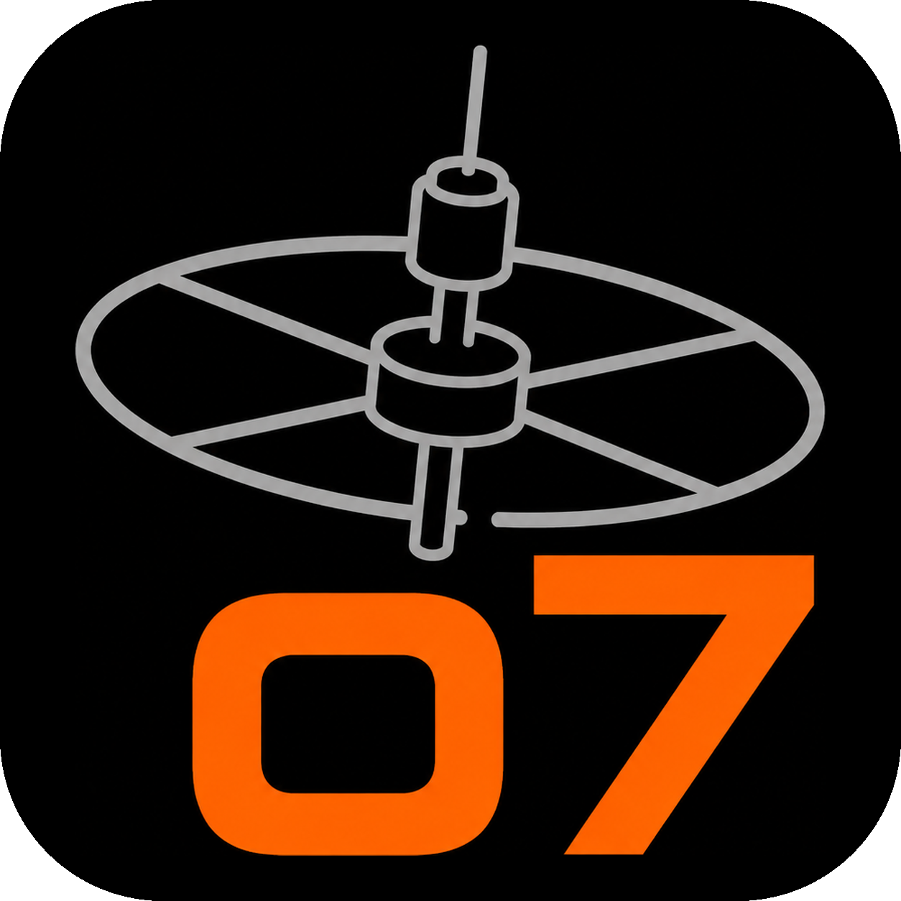
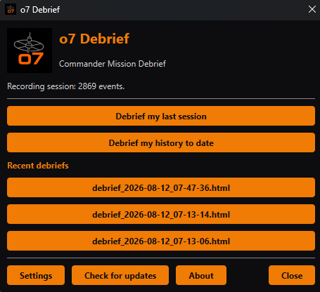
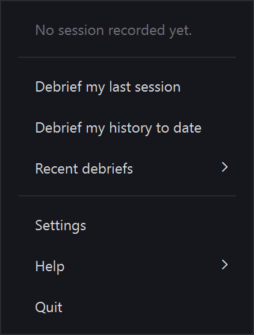
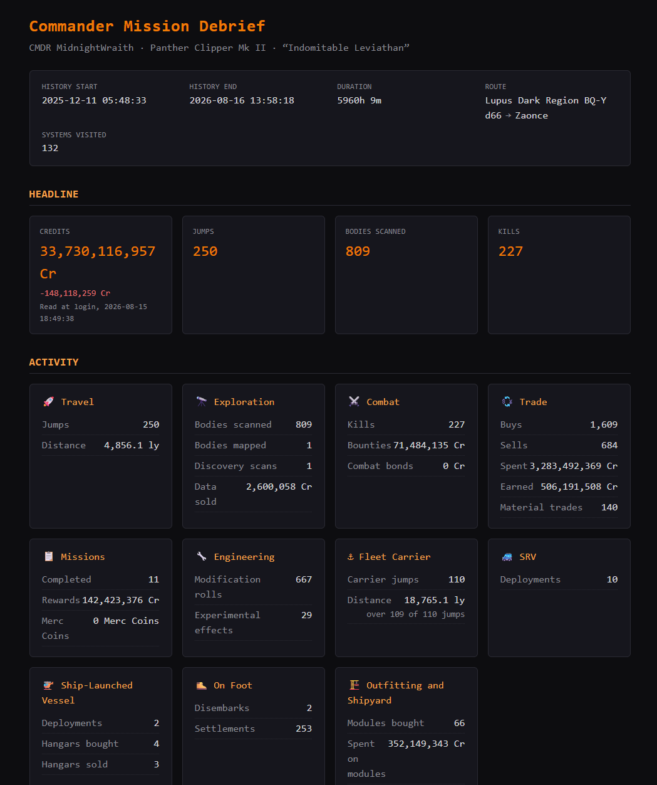

Commander Mission Debrief
A local-first Windows app that turns your Elite Dangerous journal into a single self-contained mission debrief. Every figure traces back to a real journal field. Nothing is estimated, inferred or padded.
Windows 10 and 11 · runs quietly from the system tray
Follows the active journal from the system tray and generates a debrief automatically when you shut the game down.
Cold one-shot mode reports your last session or your whole history to date, even if the app was not running while you played.
Every credit, jump and scan maps to a real entry in your journal, so the figures are verifiable and never guessed, inferred or padded.
A debrief is one self-contained file you can open in any browser or keep, plus a text version ready to paste onto Discord or Reddit.
Tier-ups show at once and fractional rank percentages settle at the next launch, because the journal only snapshots progress at startup.
The header names your current ship and its type. Every swap or purchase is also logged as a session event, from the ship you left to the one you boarded.
An optional tray entry asks GitHub whether a newer release exists and opens the releases page when one does. It never downloads or runs anything for you.
No cloud, no account, no telemetry. Your journal never leaves your machine and the app needs no administrator rights to install.



A debrief rendered from sample data. Open the full example report →
o7 Debrief is a free, local-first Windows app that turns your Elite Dangerous Player Journal into a self-contained Commander Mission Debrief you can read in any browser or share as text.
Yes. o7 Debrief is free and released under the GNU Lesser General Public Licence v3.0, with the full source on GitHub.
No. It is local-first with no cloud, no account and no telemetry. Your Player Journal never leaves your machine and the app needs no administrator rights to install.
Credits, jumps and scans across exploration, mining, trading, bounty hunting and exobiology, plus missions and Operations (naming each mission and the Merc Coins an Operation pays, kept separate from your credits) and Commander rank progress, with every figure traced to a real journal entry.
No. The tray watcher can generate a debrief automatically when you close the game; one-shot mode can also report your last session or your whole history to date after the fact.
Yes. Swapping ship or buying a new one is logged as a session event naming the ship you moved from and the one you boarded; the header also names your current ship and its type.
Yes, optionally. The tray menu has a Check for updates entry that asks GitHub whether a newer release exists and opens the releases page in your browser when one does. It is the only network call the app makes, it runs only when you click it and nothing is ever downloaded or installed for you.
Windows 10 and Windows 11. It runs quietly from the system tray and reads the Player Journal that Elite Dangerous writes on your PC.